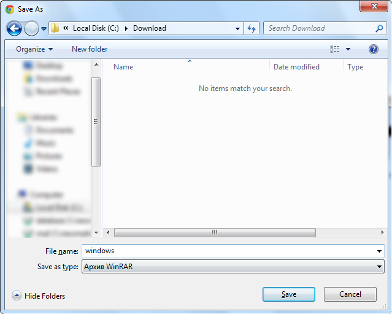
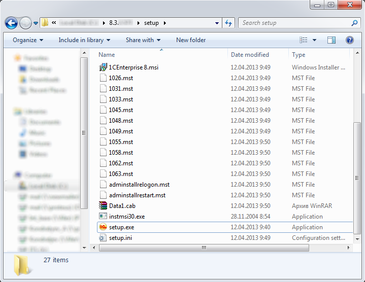
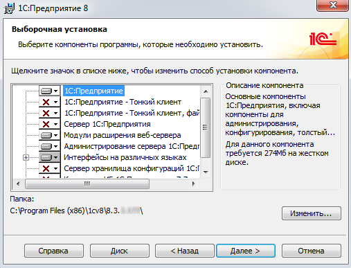
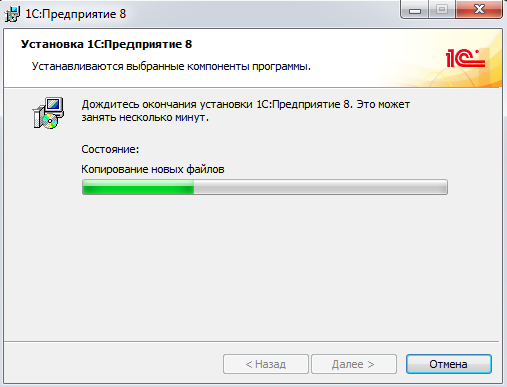
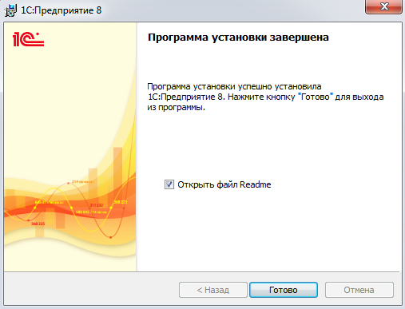
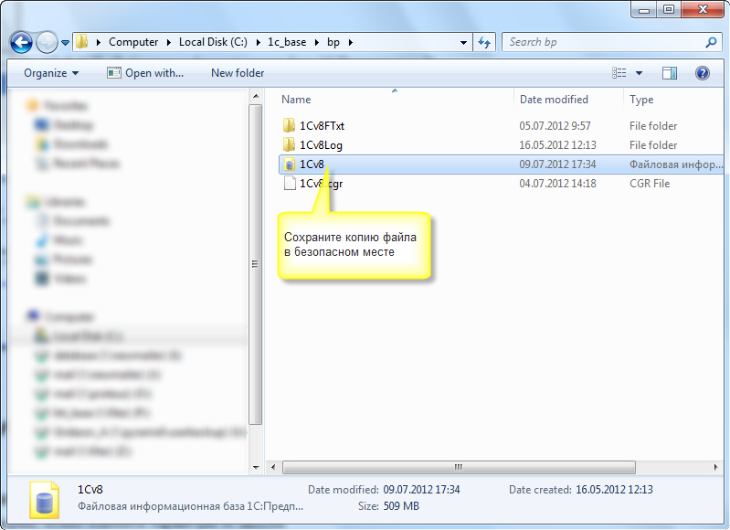

Скачайте дистрибутив останньої версії 1С:Підприємства 8.3 з сайту підтримки користувачів 1С за вказаною адресою https://releases.1c.eu/project/Platform83
Вкажіть ім'я користувача та пароль, зареєстровані на сайті підтримки користувачів: https://portal.1c.eu/
Для скачування файлу перейдіть в розділ «Технологічна платформа 1С:Підприємства для Windows»:

Збережіть файл на диск, запам'ятайте папку, до якої його зберегли:

Зверніть увагу: для установки програми користувач Windows повинен володіти правами адміністратора! Розпакуйте завантажений файл з архівом. В папці, в яку розпакували архів, знайдіть і запустіть файл Setup.exe:

Далі дотримуйтесь інструкцій програми – інсталятора:






Визначте і відкрийте каталог, в якому знаходиться потрібна база даних:

